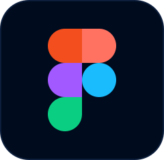
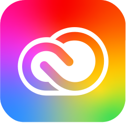
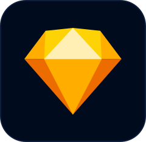
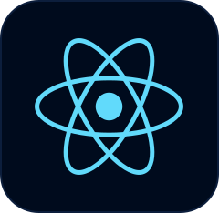
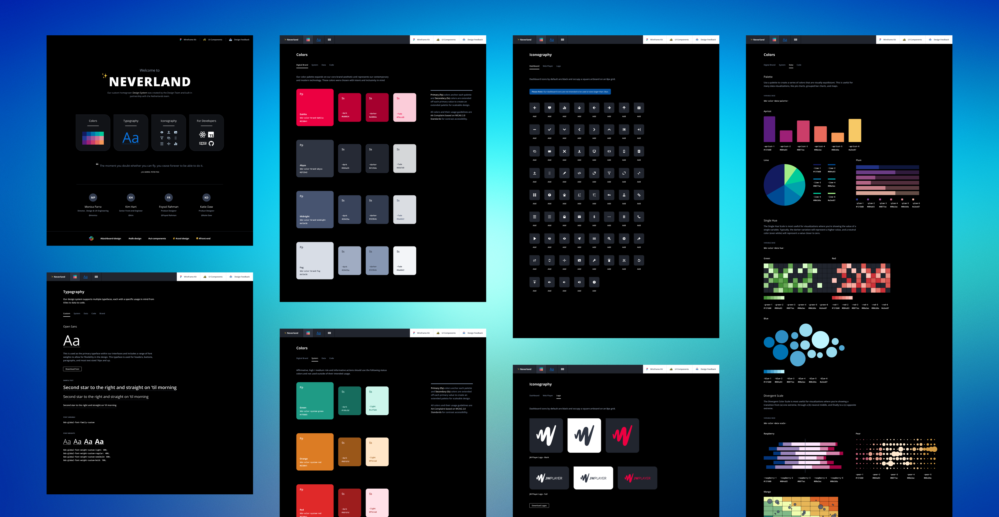
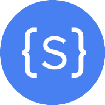

Hello, I'm Monica.
New York based Design leader building products, growing designers and guiding teams at the intersection of design and technology.
✨ Director, Design & Core Experiences @ JW Player
👩🏻💼 Director of Product Design @ JW Player
🙋🏻♀️ Lead Product Designer @ Mayo Clinic / Jibe
👩🏻🏫 Product Design Fellow @ Significance Labs Fellowship
👩🏻💻 Digital Designer @ Thomson Reuters / SPIN Magazine / Newsweek
👩🏻 Web Designer @ Magnani Caruso Dutton
I'm a design strategist with 12+ years of experience specializing in...
Product design and user experience
Qualitative and quantitative user research
Design strategy & creative direction
Architecting design systems
Management, mentorship, career development & hiring




Product Design
Case Studies
Branding
This SaaS product allows Publishers and Broadcasters to curate rich video experiences for their audiences by providing efficient workflows within an end-to-end video platform.
A custom homegrown Design System created by the Design Team and built in partnership with the Core Experiences team.

An app created for the JW Player New York office to remotely control Spotify and Sonos from any device.
A little bit more about me...
Designed a mobile app for low-income Americans as a Design Fellow for Significance Labs 2014 Fellowship .

Spoken about “Crafting a Data Driven Design Process” at FirstMark's Design Driven NYC.
Mentored aspiring young professionals through BuiltbyGirls as a WAVE Advisor .
Partnered with the Flatiron School to develop a Front-end Development Apprenticeship Program .
Volunteered through Code Nation and hosted an advanced technical workshop for students from MIHS.